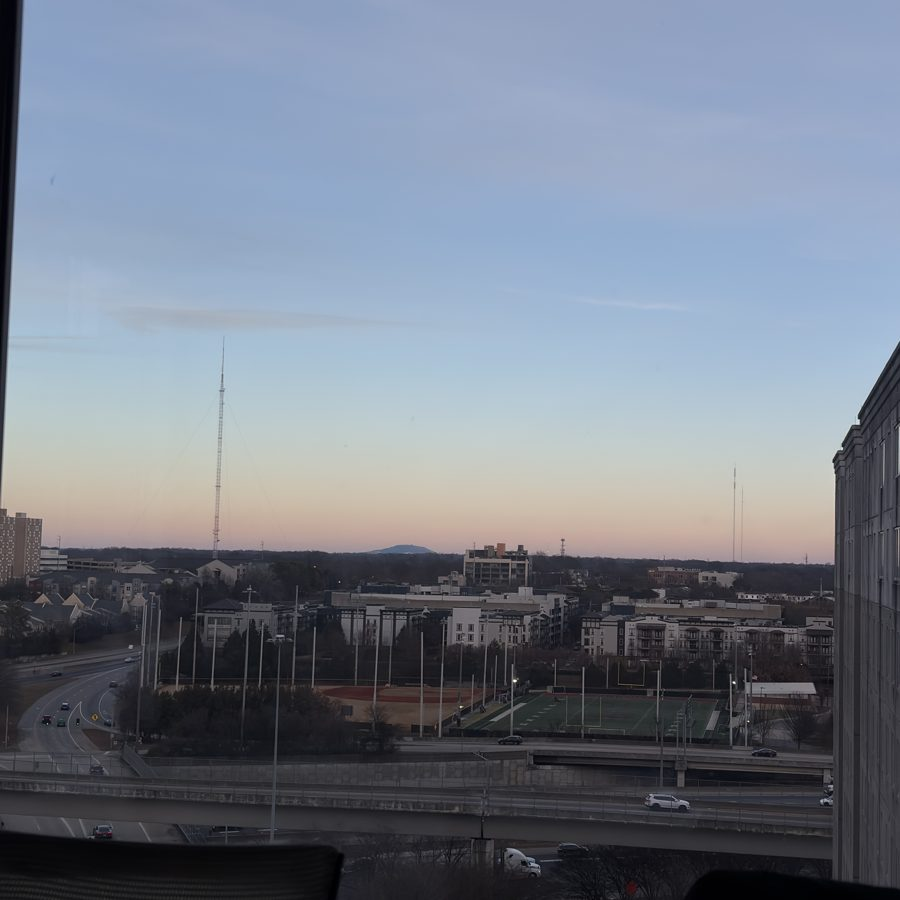
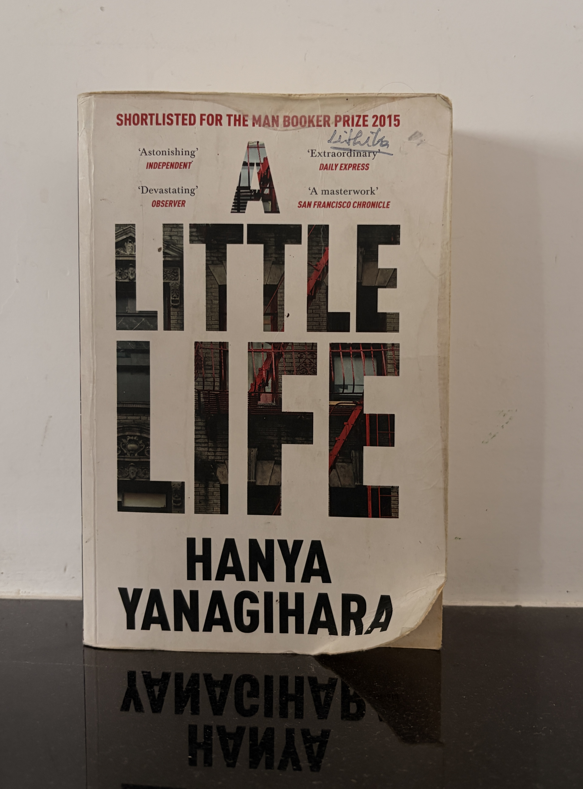

Lithika Jadav
cs & cleantech. Interested in all things energy — especially the grid.
I like working with the grid's data — prices, load, frequency: the signals a continent-sized machine gives off in real time. City planning got me curious about systems at scale, and the grid is the biggest one.
Lately I've been learning the markets side of energy — battery storage economics, frequency regulation, how power actually gets priced hour to hour. I'm just as drawn to how commodity markets move and trade, and energy trading sits exactly where the two meet.
- Studying computer science at Georgia State University — building toward the intersection of software and clean energy.
- Learning the grid — markets, transmission, and where data and ML can make the system smarter.
- Girls Who Code, GSU — shadowing the Director of Events; stepping into the role in Fall '26.
- Nexus AI, GSU — Director of Events, curating panels that connect builders, thinkers, and professionals.
- Run club — member; showing up for the miles.

Projects
Predicting Urban Air Quality with ML
Built a machine learning model to predict the Air Quality Index across major Indian cities from pollutant data (PM2.5, PM10, NO₂, CO, SO₂), identifying the strongest contributors to pollution to support sustainable city planning. Full workflow from data cleaning to a saved regression model — MAE 31.2, R² 0.81.
github.com/lithikajmalothu-16/HONORS-1000-PROJECT →SunWatch — Solar Fleet Health & Maintenance Prioritizer
Solar assets underperform silently — a panel producing 5% less still looks green on the dashboard while revenue leaks. SunWatch ingests inverter-level solar data, computes Performance Ratio against each plant's median to flag genuine underperformers, and ranks them by estimated dollars-per-day lost, turning silent losses into a prioritized maintenance queue. Across 44 inverters on 2 plants, it flagged ~25 underperformers worth ~$459K/year in preventable losses. Python, pandas, Streamlit, NREL PVWatts API — with a live demo.
github.com/lithikajmalothu-16/sunwatch →Battery Storage Arbitrage Optimizer
How much arbitrage profit can a grid-scale battery actually capture with an imperfect price forecast? This pairs a gradient-boosted price forecaster (day-ahead MAE of $5.01/MWh, 58% better than naive) with a linear-programming optimizer that schedules hourly charge/discharge under real constraints — capacity, power rating, round-trip efficiency, and degradation. Backtested on 72 held-out days: the forecast captures 66.5% of perfect-foresight profit, and modeling battery wear cuts naive returns ~3x while keeping cycling at a realistic ~2.5/day.
github.com/lithikajmalothu-16/battery-arbitrage-optimizer →Library
Books I've read and films I love, shelved together.

Writing
Notes on energy, cities, and the systems in between. Read on Medium →
Learning the Grid From Zero: Levels 0 and 1
A journey through electricity fundamentals and the physical grid — told the way it finally made sense. Level 0 is the raw physics; Level 1 is the machine that delivers it.